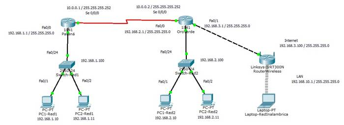

Carrera: Lic. En Sistemas Informáticos
Cátedra: Comunicaciones y Redes
Conexiones físicas de dispositivos, configuraciones de Capa 2 y visualizaciones de MAC.
Objetivos
· Configurar los equipos según la topología de la red.
· Realiza las conexiones necesarias.
· Asignar el direccionamiento IP estático a las NIC.
· Probar la comunicación entre dispositivos finales pasando por los diferentes medios ejecutando el simulador.
· Analizar la dirección MAC de las PCs, Switchs y Router
Introducción
Los dispositivo en una Red Ethernet está identificado con una dirección MAC de la capa 2. Esta dirección se graba en la NIC de cada dispositivo. En esta práctica, se explorarán y analizarán los componentes que integran una dirección MAC, y cómo puede encontrar esta información en los diversos dispositivos de red.
Topología

Paso 1: Conectar los dispositivos con los medios adecuados.
Paso 2: Configurar las direcciones IPv4, los nombres de las PCs y los Switchs según la topología que se muestra en la imagen.
Paso 3: Configurar entre los Routers de Paraná y
OroVerde encapsulación PPP con protocolo de autenticación de contraseña (PAP).
El parámetro a utilizar
para configurar la autenticación es: redes
Paso 4: Configurar la rutas por default de los routers
para que se puedan comunicar las redes.
Paso 5: Verificar que este configurado correctamente la encapsulación entre los dos routers con el comando show.
Paso 6: Configurar el RouterWireless con
los parámetros de la imagen, definirle la Puerta de Enlace y usar la siguiente
información para la configuración inalámbrica.
SSID: CyR
Channel: 1
Autenticación: WPA2-Personal
Clave: comyredes
Encriptación: AES
Configurar DHCP de la red Inalámbrica
Rango de Direcciones de IP: 192.168.10.10 - 192.168.10.15
|
Dispositivo |
Interfaz |
MAC |
|
Paraná |
Fa0/0 |
|
|
OroVerde |
Fa0/0 |
|
|
PC1_Red1 |
NIC |
|
|
PC2_Red1 |
NIC |
|
|
PC1_Red2 |
NIC |
|
|
PC2_Red2 |
NIC |
|
|
Laptop-RedInalámbrica |
Wireless0 |